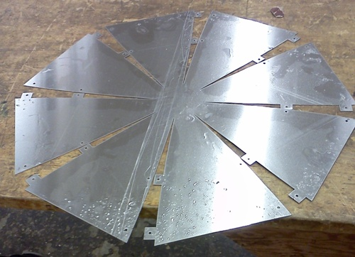
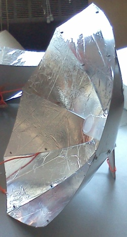
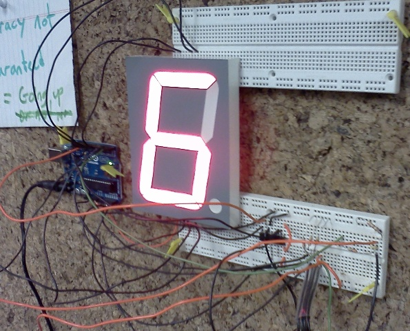
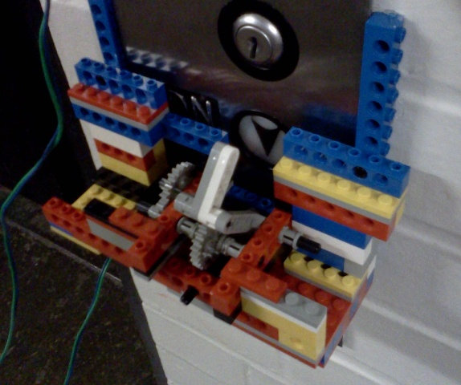

Solar Water Heater ProjectFor our second project, we worked in small groups to create solar water heaters. Our team's design heats 100ml of water using a parabolic concentrator. It was inspired by this Instructables project. Curious? Download the final report.  |
 |
My love letter to review of Gmail.
Not sure whether I like how this essay turned out, but here it is... Myth essay.
In the third and final project, our group attacked a problem that frustrates many ESG students and staff: the slow elevator. ESG is on the 6th floor of Building 24, which is served by only one elevator. To reduce the elevator wait time, we designed and built a device to remotely call the elevator from the ESG lounge. We also created a system to display the elevator's current position in the ESG lounge, so users can wait in the lounge instead of in the hall.
Download the final report here.


Not seeing the navigation panel? Click here to create a navigation panel.